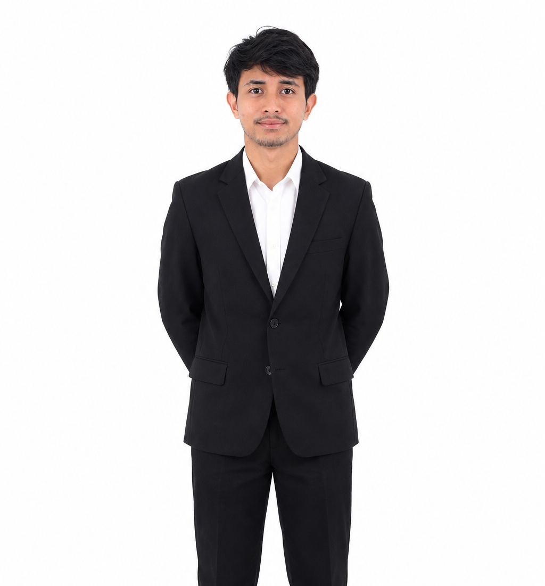
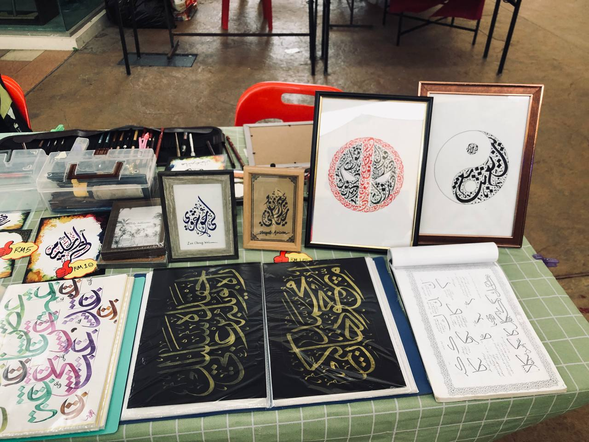
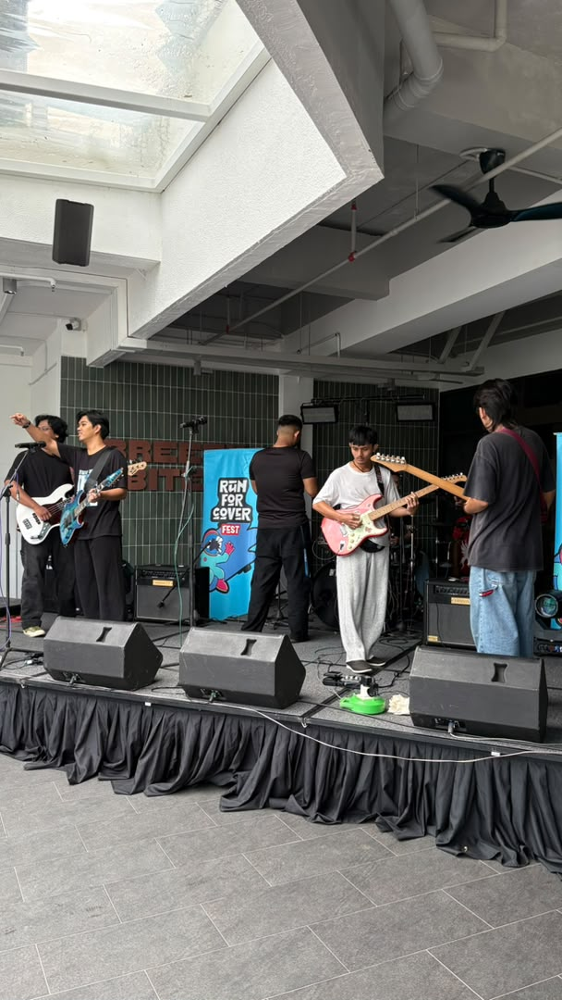
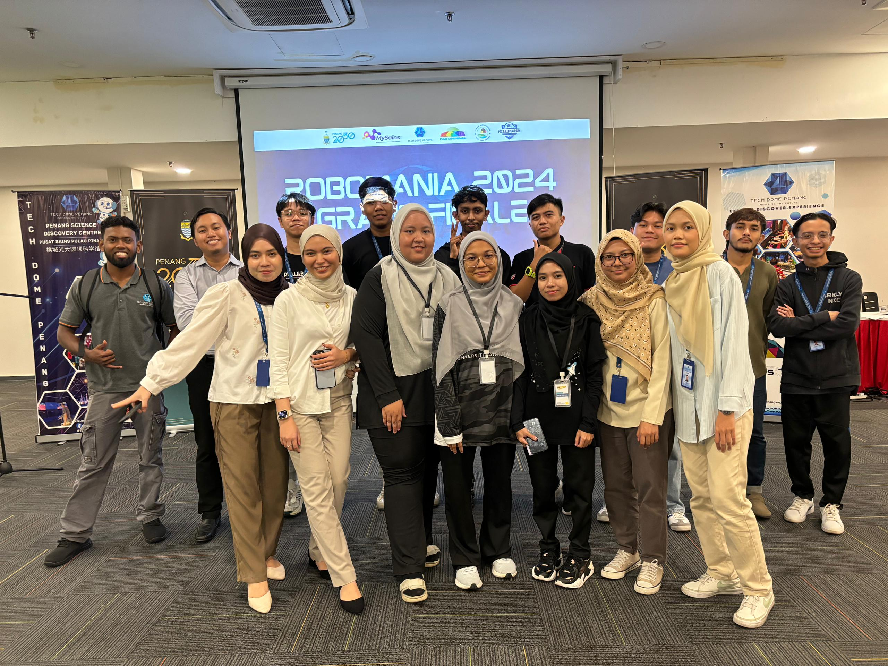

UniversityUniversiti Teknologi MARA (UiTM)
Available for internship opportunities
Asyraf Puzi
Full-Stack Web Developer
Hi, I'm Muhammad Asyraf bin Mohamad Puzi, a Bachelor of Computer Science (Hons.) Netcentric Computing student at UiTM, passionate about web engineering, networking, and practical software development.

AP
3.56Current CGPA
UiTMUniversity
About
Welcome to my little corner of the internet.
My path into computing began with a Diploma in Computer Science at Universiti Teknologi MARA (UiTM), Arau, Perlis. That foundation taught me to enjoy the practical side of technology: understanding a problem, designing a solution, and making it reliable.
I am now pursuing a Bachelor of Computer Science (Hons.) in Netcentric Computing at UiTM. My interests sit across web engineering, secure network architectures, and IoT solutions that connect software with the physical world.
I approach every project with patience and curiosity, aiming to make the final experience useful, clear, and considerate of the people who will use it.
DegreeB.Sc. (Hons.) Netcentric Computing
Focus areasFull-Stack Web, Networking & IoT
AvailabilityOpen to internship opportunities
Education
Education & background.
The places and disciplines shaping how I think, build, and solve problems.
Bachelor's degreeMarch 2025 –
Present · Expected 2028
Bachelor of Computer Science (Hons.) Netcentric Computing
Universiti Teknologi MARA (UiTM), Arau, Perlis
3.56Current CGPA
DiplomaMarch 2022 – 2025
Diploma in Computer Science
Universiti Teknologi MARA (UiTM), Arau, Perlis
2.76CGPA
My toolkit
Skills I bring to the table.
Programming Languages
Tools & Platforms
Core Competencies
Selected work
Selected projects
Professional learning
Certificates & achievements.
Cisco Networking Academy credentials supporting my interests in cybersecurity, IoT, and connected technologies.
 View full image
View full image
Cisco Networking Academy
Introduction to Cybersecurity
Completed 22 November 2026
 View full image
View full image
Cisco Networking Academy · UiTM Perlis
Introduction to IoT and Digital Transformation
Completed 15 February 2026
Life beyond the classroom
Activities & milestones.

Creative entrepreneurship
Artasuflet
Freelance Arabic calligraphy artist who has operated booths at more than 20 events.

Music & performance
Packetloss Band
Active band member performing at university events, independent gigs, and busking sessions across Penang and Perlis.

STEM education
Education Technology Internship
Helped conduct numerous STEM workshops as part of the Education Technology Department during my internship.
Let's connect
Ready to build something meaningful?
I'm currently open to software engineering, web development, and networking internship opportunities. Feel free to reach out or review my resume.